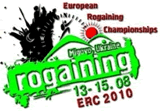

Duration: 3hrs and 1.5hrs
Location: New Plymouth,
Taranaki
This urban series starts on February 3rd and will run for 6 successive Wednesdays. There are 3hr and 1.5hr events. For website and email links visit the Maptalk calendar.
Duration: 3hrs
Location: Port Hills,
Canterbury
Joel Smith, Elisha Nuttall and Jess Collingwood are organising a Rogaine on Waitangi day in the Godley Head area with the start/finish at Taylors Mistake car park. It will run from 6pm - 9pm with registration from 5pm. Proceeds will be used to fund the Middleton Grange OPC team to compete at the Hillary Challenge in Turangi. For further information and an entry form see the event website http://www.waitangirogaine.110mb.com/.
beginning 3rd March
Duration: 3hrs
Location: Port Hills,
Canterbury
Nora Audra and Ian Edmond are organising the popular R&R Sport Taylors Mistake Rogaine Series again. The series starts on March 3rd and will run for 5 successive Wednesdays visiting a different part of the Port Hills each week. The events will be three hours long. For more information and an entry form visit http://www.madeventz.co.nz/tmrogaine.

2010 Australian Championships
Weekend 27-28 March, 24hrs, Snowy Mountains
To be hosted by the ACT Rogaining Association in the Snowy Mountains. The course will be set by the current Australian champions, David Baldwin and Julie Quinn, and will provide excellent navigational challenges in a beautiful environment. Entries, limited to 550 people, are now open. See the event website.
Weekend 17-18 April, 24hrs, Akatarawa Ranges
Hosted by Orienteering Hutt Valley in the Akatarawa Ranges with Mike Sheridan as the chief organiser. There will be 3hr, 6hr and 12hr non-championship events in addition to the 24hr championship. Entry forms are now available and entries close 7th April. See the extensive information on the event website.
Duration: 4hrs
Location: Waitakere City
Auckland
This is an urban rogaine exploring the parks and other greenspaces of Waitakere City and the extensive track network joining them. The event is organised by Lactic Turkey Events. For more details see the website at http://www.lacticturkey.co.nz/EcoCityChallenge.htm.
Duration: 3hr & 6hr options
Location: Wellington
The City Safari allows you to use Public Transport: bus, train, cablecar, ferry. You can use your head instead of your legs to get partway to the checkpoints. For more information see the event website www.citysafari.org.nz.
Duration: 24hrs
Location: Canterbury
This will be the 44th running of this event, organised by the University of Canterbury Tramping Club, the pioneer of long distance foot navigation events in NZ. It differs from a Rogaine in that teams follow a fixed route. A "not to be missed" event. For details and entry information keep an eye on the T'Walk website.
Duration: 12 & 6 hrs
Location: Wanaka region
Based at Bendigo Station (home of Shrek the sheep). In addition to the 12hr and 6hr foot events there will be a 6hr MTB/Foot rogaine and a "Grab A Map" beginners event. Organisers - Ed Stevens and Terry Davis. See the website http://www.highlandevents.co.nz/rogaine for more details. Entries are limited to 250 people.
Duration: 12hr & 6hr options
Location: North Canterbury
Course planning has been completed for Heights of Winter. We have a great area just 45 minutes drive from Christchurch. Event organiser is Grant Hunter g.hunter@clear.net.nz and Pat Bodger is course planner - see his Planner's Report. Further information is available. Enter on-line now and have a look at the List of Entrants. Entries close 5pm Wednesday 16th June; late entries until 5pm Wednesday 23rd June for $20 late fee.
Instructions for Competitors (46KB PDF)
Can you help? NZRA committee members in Christchurch have a very full year organising the World Championship in November as well as Heights of Winter. If you'd like to help with Heights of Winter they'd love to hear from you. Contact Grant.
Duration: 3hrs
Location: Wellington
A series of afterwork events at intervals of 3 or 4 weeks in the Wellington area beginning 13th July and running until early November. See the maptalk calendar for details.
Duration: 24hrs
Location: Hemavan, Sweden
The Icebug is in the north of Sweden; it is possible to fly to the village of Hemavan from Stockholm. Once there everything is within walking distance, therefore no need for rental cars. As Hemavan is a ski village and this is the off season accommodation is relatively cheap. There is even prizemoney, 24000 SEK. It is a really scenic area in the mountains and you are very likely to meet some reindeer out on the course. The dates tie in well with the world MTBO in Portugal.
Duration: 3hrs
Location: Auckland
A 3hr event in the Riverhead Forest which is at the head of the Waitemata Harbour, north-west of Auckland. Information and entry form are available on the Lactic Turkey Events website. Entries close 4th August.
Duration: 3hr
Location: Wellington area
The Winter Classic is an endurance, long distance orienteering event that is both physically and mentally demanding. There is a 3hr Challenge Rogaine run in conjunction with the event. See the Classic website for details.

2010 European Championships
Weekend 14-15 August, 24hrs, Migovo, Ukraine
Migovo is a ski resort in the Southwest region of Ukraine near the border with Romania. The terrain is mostly forested, reasonably rugged and hilly with an elevation variation of 400 meters. This would be an interesting event in which to partake if you happen to be in Europe in mid-August. For further information and pictures see the English version of the event website.
Duration: 4 & 3hrs
Location: Springfield,
Canterbury
A navigational adventure in the Springfield region of the Canterbury foothills in support of Darfield HS Rural College. All new terrain from 2009. The 4-hour rogaine (Attack) is for the competitive and the 3-hour rogaine (Amble) is intended to be more recreational. For more information and an entry form see the Darfield High School website.
Saturday 11th September
Duration: 12 & 6 hr options
Location: Central Otago
E.P.I.C. Returns - The Ophir Awesome E.P.I.C. Rogaine
E.P.I.C. is back with 12 and 6hr Rogaines in the historic Ophir area, Central Otago. Organisers are Bruce McLeod and Phil Wood. For an entry form and information see E.P.I.C. Navigation. Entries close 7th September ($10 discount for early bird entry by 1st August).
Sunday 11th September
Duration: 3hrs
Location: Marlborough
Marlborough 3hr Rogaine - Springtime in the Park
This, the 8th Marlborough Rogaine organised by the Marlborough Orienteering Club, will be based in the Wither Hills Farm Park. Entries close Wednesday 8th September. Download details and an entry form (22KB PDF). Contact is holdaway@xtra.co.nz.
Saturday 25th September
Duration: 6 & 3 hr options
Location: Albert Town Tavern,
Wanaka
Katharine Eustace Fundraising Rogaine
Fun family day 3hr and 6 hr plus grab-a-map for those who just want to go out and find out how Rogaining works. HQ once again at the Albert Town Tavern. This will be great practice for the real deal on 23 October.
This is a fundraising event for Katharine Eustace who is a keen Wanaka Rogainer with many other athletic talents. Katharine will be representing NZ at the World Champs, and competing on the World Circuit, in Skeleton Racing. So come along and help Katharine reach her goals. There will be a fundraising auction after the event plus other fun stuff. We organised a similar event last year and it was alot of fun!!!. For further details go to www.highlandevents.co.nz
Midweek Series
beginning 20th October
Duration: 3hrs
Location: Port Hills,
Canterbury
R&R Sport Taylors Mistake Rogaine Series
Nora Audra and Ian Edmond are organising the popular R&R Sport Taylors Mistake Rogaine Series again this Spring. The series starts on October 20th and will run for 3 successive Wednesdays visiting a different part of the Port Hills each week. The events will be three hours long. An entry form is available at http://www.madeventz.co.nz/tmrogaine.
Saturday 23rd October
(Labour Weekend)
Duration: 12 & 6 hr options
Location: Albert Town Tavern,
Wanaka
Highland Events Rogaine Heaven
Course description: large mainly flat areas with low open Kanuka scrub. Some slightly hilly parts going from 300m to 550m - this course will be quite fast, also ideal for the beginner rogainer. See www.highlandevents.co.nz for further details
Saturday 6th November
Duration: 8hrs
Location: Rotorua
The Great Forest Rogaine
An 8hr foot event and a 6hr MTB event with the same controls for both. Utilising Rotorua's wonderful and right up-to-date Whaka Forest Map, this event is perfectly timed for a pre-World Rogaine Champs blowout, and will also feature as a part of the World Champion Team Orion's AR Training Weekend being held in and around Rotorua. See the event website. Contact is Mark Copeland.
begins 10th November
Duration: 3hrs
Location: New Plymouth
New Plymouth Urban Afterwork Series
A series of eleven afterwork events beginning on the 10th November and running weekly through until 9th March except for a break over the Christmas period. See the Maptalk calendar for details.
Duration: 24hrs
Location: North Canterbury
9th World Rogaining Championships
To be held in the Cheviot region in North Canterbury, New Zealand. See the event website, World Champs 2010 (Cheviot).
Wednesday 15th December
Duration: 3hrs
Location: ChCh Port Hills
Christmas Twilight
This fun event will once again be organised by Tim Farrant and Elisha Nuttall as a fundraiser for Junior Rogaining in Canterbury. Registration and maps available from 5:30pm with a 6:30pm start from Victoria Park car park. For entry forms and further information see the event website www.cutc.org.nz/twilight_rogaine/. There is a $5 discount on entries received before 13th December.